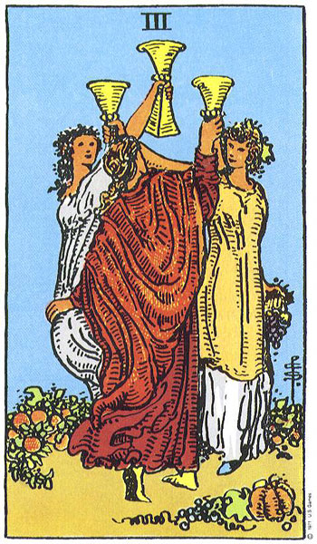

Cancer
El Tres de Copas representa la reunión con viejos amigos o familiares. Esta carta nos enseña cómo corresponder a sentimientos de amor o amistad.
Este mes tendrás una ocasión para celebrar una meta de vida. Lograrás algo que te habías propuesto hace mucho tiempo. Pero no es que el destino te lo va a regalar. Tienes que hacer tu parte. Este mes las musas del arte te visitarán. Es un buen momento para retomar los proyectos artísticos, y encontrar creatividad dentro dela cotidianidad. Abre tu mente. Evoluciona.
¿Soltero? Posibilidad para encontrar amor en una fiesta.
Es el momento para encontrarse con los viejos amigos. Este mes evita la soledad y el sentir que no disfrutas de la compañía de los demás.
Volver al inicio
Programar una lectura profesional